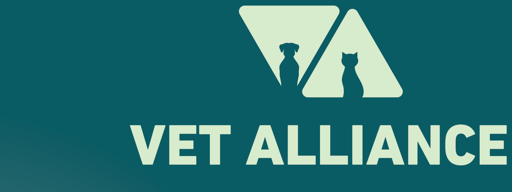

Vet Alliance Holding is the UAE's largest veterinary group, operating a network of clinics across Dubai under a single quality and clinical standard. We provide preventive, routine, emergency, surgical and referral-level care for companion animals, working dogs, and institutional patients.
Every clinic in the network is fully licensed by the Dubai Municipality and audited against a unified clinical and infection-control standard. All branches operate on the same medical records system, which means a patient's full history follows them between branches.
A 24/7 multi-specialty hospital, a referral centre (TVRC), and a chain of comprehensive day clinics across Dubai. Sister brands cover exotics, charity/TNR, and pet relocation, giving partners a single point of contact for the full spectrum of veterinary needs.
Over 60 veterinarians across the group, supported by RVNs and trained support staff. The team spans more than 30 languages and covers internal medicine, surgery, orthopaedics, cardiology, neurology, ophthalmology, dermatology, oncology, and rehabilitation.
Shared diagnostics, shared records, shared protocols. Cases can move between a branch and the hospital without losing continuity, and complex cases route to the referral centre under one coordinated team. Open every day of the year, including public holidays.
For institutional and corporate partners, working with Vet Alliance means one accountable veterinary group covering the full clinical pathway — without referring out of network.
Six locations covering every major area of the city, plus a 24/7 hospital and a referral centre under one operational umbrella.
Modern Vet Hospital on Al Wasl Road runs 24 hours a day, every day of the year, with veterinarians and nursing staff on-site overnight. No appointment required for emergencies.
60+ vets across general practice, surgery, internal medicine, and specialist disciplines. Surgeons hold international post-graduate qualifications and the team has performed several UAE firsts in cardiac, ophthalmic, and neurological surgery.
In-house X-ray and ultrasound at every branch. CT and MRI at the hospital and the referral centre. Endoscopy, echocardiography, full in-house lab, and dedicated isolation wards.
One medical records system, one phone line, one WhatsApp. Cases hand off cleanly between a local branch and the hospital without the client repeating the history.
From vaccinations and routine checks through to orthopaedic surgery, neurosurgery, and intensive care. The same group handles preventive care and the most complex referral work.
The services below are available across the network. Routine work is delivered at the local branches; advanced imaging, complex surgery, and intensive care are concentrated at Modern Vet Hospital and TVRC.
Vet Alliance supports government, security, and institutional partners that operate working dogs and other service animals. We provide structured, accountable veterinary care backed by the full diagnostic and surgical capability of the group — from a routine vaccine round at a kennel through to overnight emergency surgery on a working dog.
Dedicated clinical handling for K9 units and service-dog programmes, including high-drive working breeds and patients in active deployment.
Annual vaccinations, scheduled health checks, parasite control, dental scaling, microchipping, and kennel-side wellness assessments.
24/7 walk-in emergency triage at Modern Vet Hospital. Direct line for partner referrals with no booking delays.
In-house lab, X-ray, ultrasound, CT and MRI. Surgical theatres for soft-tissue, orthopaedic, and neurological work. Inpatient wards with overnight monitoring.
Full written case reports, treatment summaries, imaging exports, and follow-up plans issued for every institutional patient. Records auditable on request.
A single named contact handles bookings, follow-ups, and escalations for the partner. Bypasses the standard call-centre queue with priority routing.
The hospital handles 24/7 emergency and all complex/specialist work. The branches handle daytime consultations, vaccinations, dentistry, soft-tissue surgery, and in-house imaging. All branches share the same medical records system and a single phone number: 800-82 (toll-free in UAE) · WhatsApp 050 630 4573.
Locations across Dubai — covering from Palm Jumeirah through Downtown, Al Wasl, JLT, JVC, Nad Al Sheba and beyond.
Within the same holding group, additional brands extend our coverage for areas outside core companion-animal general practice.
Dedicated TNR programme and charity/rescue veterinary care. Suited for partners working with community animals and welfare programmes.
Exotic animal medicine, avian work, and routine exotic surgery — for partners handling species outside the typical canine/feline scope.
Health certification, export permits, and transport logistics for animals being relocated internationally. Useful for service-animal redeployment and overseas postings.
Scheduled and on-demand pet transport, including out-of-hours pickup, for moving patients between partner sites and our clinics.
Respectful end-of-life support including private and communal cremation, with coordination handled through any branch.
Online booking, e-commerce, and vet-curated pet essentials. Used by clinic clients to book appointments and purchase verified products across the network.